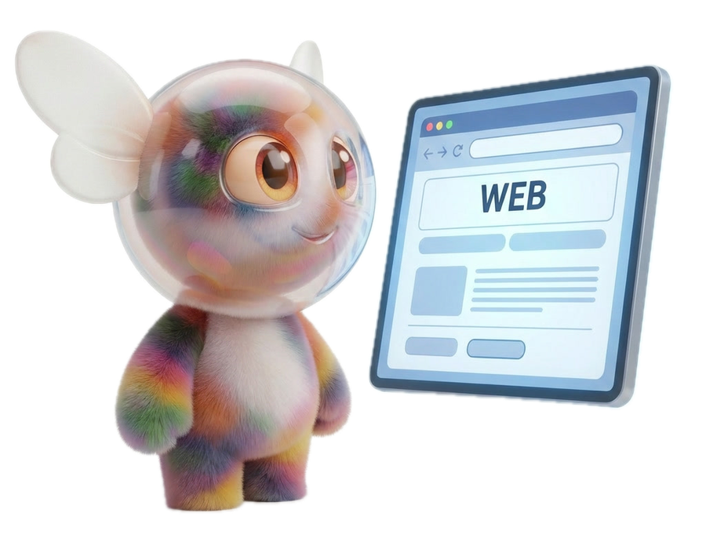

Alejandro
Soler
I turn hard mathematics into systems that ship.
Physicist and aerospace systems engineer. I take rigorous optimization and machine learning and deploy them — from spacecraft powered-descent guidance to a cross-venue execution engine trading real capital on prediction markets.
Currently — MSc thesis on rocket-landing GNC · building Bolbee, an AI product for SMEs · preparing for quantitative research roles.
Theory and
practice, fused.
I got obsessed with the P vs NP problem at 14 — not because I was going to solve it, but because attacking the impossible with pure reasoning never stopped being the thing I love most.
The pattern has held across every domain since: take a hard, open-ended problem, build the model, and actually deploy it where it has to work. Convex optimization to land a rocket. Multi-agent control to find what's hidden underground. A cross-venue execution engine trading my own capital on prediction markets. AI tools real businesses can use.
Scientific rigor, real deployment, and markets — that intersection is quantitative research. It's where I want to point everything I have, at the highest level.
What I've built.
The Magic Window — Cross-Venue Bitcoin Structure
Found a predictable settlement gap between Polymarket and Kalshi on hourly Bitcoin: the disagreement between their two price oracles is the USDT/USD stablecoin basis — signed, and forecastable before the hour resolves. Built a Rust execution engine to trade it, on AWS eu-west-1 (Ireland) for proximity to the venues; wound it down when Spain banned both. Wrote it up as a public research note — the mechanism validated on 1,350 real Kalshi settlements, and deliberately honest about what it does and does not prove.
Flight Dynamics — PLD Space
Flight Dynamics team at Spain's launch-vehicle company. Built MATLAB tools automating recurring flight-dynamics analyses; reworked the finite-difference surface discretization used to compute panel areas, improving the accuracy of pressure-to-force integration on the launch vehicle.
Powered-Descent Guidance & Control
Real-time trajectory optimization for autonomous rocket landing — the final 2 km of powered descent, the same convex-guidance family behind SpaceX booster landings. The min-fuel problem is non-convex (the engine can't switch off), so I make it convex with lossless convexification and solve the resulting SOCP. Reproduces the Mars-lander benchmark of Malyuta et al. (2022): t_f* = 75 s, exact landing, bang-bang throttle. The interactive demo flies the real solver output.
Multi-Agent Control with Kriging
Multi-agent Bayesian search: coordinated agents locate the maximum of an unknown field via Gaussian-process (Kriging) regression, balancing exploration vs. exploitation under uncertainty. Applied to source localization (contaminant, thermal or radioactive sources; natural deposits). Selected for Docta Complutense, UCM's distinguished-thesis repository.
Exoplanet-Detection Neural Network
Led a 3-person team building a neural-network exoplanet classifier on NASA telescope data: owned data cleaning and feature selection, defined the train/test methodology and evaluation; delivered a working model in 48 hours.
Bolbee — AI Marketing for SMEs
Sole engineer of the full product — Next.js, Supabase/SQL, Stripe, multi-model AI pipeline. Bolbee generates a marketing strategy plus ready-to-publish content for small businesses; 10 active beta users, market launch summer 2026.

What I work with.
Programming & Scientific Computing
Python (NumPy, pandas — numerical methods, data/eval pipelines) · Rust (trading execution engine) · MATLAB (flight dynamics, simulators) · TypeScript / SQL (Bolbee)
Mathematics
Convex optimization, control theory (multi-agent & GNC), Gaussian processes (Kriging), probability & statistics, numerical optimization, Monte Carlo
Machine Learning
Applied in projects — neural-network exoplanet classifier (data pipeline, train/test design, evaluation), feature-engineering for handwritten-character recognition; currently building depth in statistical learning
Also
Quantum algorithms in Qiskit · Recreational skipper's license (PER, ≤ 24 m) — offshore navigation, charts, seamanship
Let's talk.
Available full-time from September 2026. Targeting Quantitative Researcher / Trader roles.